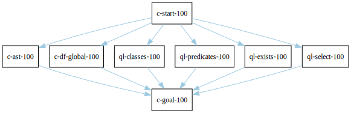
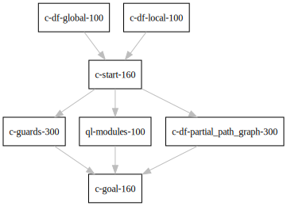
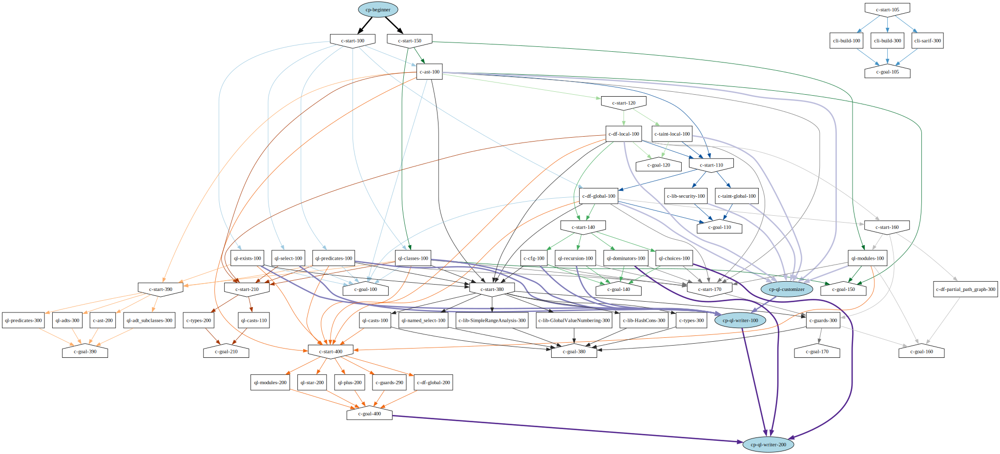
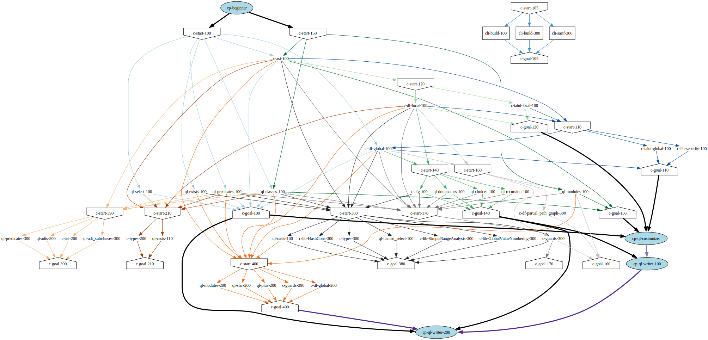
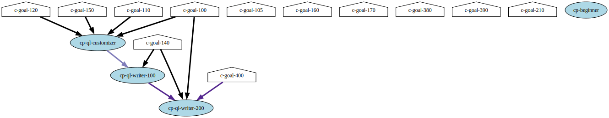
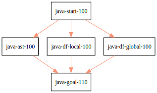

Table of Contents
- 1. Existing workshops in single large repository
- 2. Existing workshops in separate repositories
- 2.1. TODO SCURVY: Untangle this
- 2.2. TODO Use vs. learning
- 2.3. TODO Paths for new workshops
- 2.4. Common
- 2.5. https://github.com/hohn/codeql-dataflow-sql-injection, C
- 2.6. https://github.com/hohn/codeql-dataflow-sql-injection, cli
- 2.7. https://github.com/advanced-security/codeql-workshops-staging/blob/master/cpp/introduction/session-3/codeql-workshop-cpp-global-data-flow.md
- 2.8. https://github.com/advanced-security/codeql-workshops-staging/tree/master/cpp/introduction/session-2
- 2.9. https://github.com/rvermeulen/codeql-workshop-control-flow-cpp
- 2.10. fork https://github.com/hohn/codeql-workshop-control-flow-cpp
- 2.11. https://github.com/rvermeulen/codeql-workshop-elements-of-syntactical-program-analysis-cpp
- 2.12. https://github.com/rvermeulen/codeql-workshop-dataflow-2-cpp
- 2.13. https://github.com/kraiouchkine/codeql-workshop-dataflow-c
- 2.14. https://github.com/kraiouchkine/codeql-workshop-runtime-values-c
- 2.15. fork: https://github.com/hohn/codeql-workshop-runtime-values-c
- 2.16. https://github.com/kraiouchkine/codeql-workshop-dangling-pointers-c
- 2.17. fork: https://github.com/hohn/codeql-workshop-dangling-pointers-c
- 2.18. https://github.com/rvermeulen/codeql-workshop-vulnerable-linux-driver
- 2.19. https://github.com/knewbury01/codeql-workshop-integer-conversion.git
- 2.20. fork: https://github.com/hohn/codeql-workshop-integer-conversion.git
- 2.21. Together
- 2.22. Checkpoints
- 2.23. Together with Checkpoints
- 2.24. More compact detail nodes
- 2.25. Checkpoint dependencies moved to workshop ends
- 2.26. Remove the content description nodes
- 2.27. Substitute workshop nodes for start/goal nodes
- 2.28. Get checkpoint descriptions
- 3. Other than C/C++
- 3.1. GHAS config
- 3.2. CLI / VS Code IDE
- 3.3. Sample Project Layout cli project
- 3.4. Pack vs. Bundles admin integration
- 3.5. https://github.com/hohn/codeql-cli-end-to-end CLI bundle admin integration
- 3.6. https://github.com/rvermeulen/codeql-bundle bundle
- 3.7. https://github.com/knewbury01/codeql-workshop-nekohtml java
- 3.8. https://github.com/rvermeulen/codeql-workshop-points-to-java java
- 3.9. CodeQL workshop for Java: Finding a SQL injection java sql cve advanced
- 3.10. https://github.com/advanced-security/codeql-workshops-staging/blob/master/java/codeql-java-workshop-sqlinjection.md
- 3.11. https://github.com/hohn/codeql-java-workshop-sqlinjection-owasp java sql
- 3.12. Vulnerable Linux Driver advanced special_topic
- 3.13. CodeQL cve 2022 35737 C cve custom
- 3.14. https://github.com/rvermeulen/apache-struts-cve-2017-9805 java cve custom
- 3.15. https://github.com/hohn/codeql-dataflow-ii-java
- 3.16. https://github.com/rvermeulen/codeql-workshop-introduction-to-javascript javascript
- 3.17. codeql workshop control flow java
- 3.18. https://github.com/rvermeulen/codeql-workshop-dataflow-2-java
1. Existing workshops in single large repository
The repository https://github.com/advanced-security/codeql-workshops-staging has a collection of workshops. Some of them have been separated out below for better usability.
2. Existing workshops in separate repositories
2.1. TODO SCURVY: Untangle this
[ ]This is mixing actual workshops that are based on learning objectives with[ ]an imaginary structure of school-style classes.
First identify the learning paths, then their (common?) components.
2.2. TODO Use vs. learning
Some modules are prerequisites for a workshop, so they are used but not taught.
2.3. TODO Paths for new workshops
[ ]Paths for new workshops, with different node shapes.[X]"Reinforces" entries for paths? Same as prerequisites.[X]focus on C[ ]parallel edges for paths?[ ]Parallel graphs for other languages.[ ]Feedback
2.4. Common
import networkx as nx import scurvy as sc G = nx.MultiDiGraph() Gt = nx.DiGraph() # Set defaults Gt.graph['graph']={'rankdir':'TD', 'fontsize':9, 'stylesheet': 'graphstyle.css', } Gt.graph['node']={'shape':'rect', 'fontsize':12} Gt.graph['edges']={'arrowsize':'4.0', 'fontsize':12, } G.graph['graph']={'rankdir':'TD', 'fontsize':9, 'stylesheet': 'graphstyle.css', } G.graph['node']={'shape':'rect', 'fontsize':12} G.graph['edges']={'arrowsize':'4.0', 'fontsize':12, 'penwidth':6, 'stroke-width':6, 'stylesheet': 'graphstyle.css', } # Add whole path, nodes and edges. colnum = 0 def add_path(*path): global colnum # # serial path # for ndi in range(0, len(path)-1): # Gt.add_node(path[ndi]) # Gt.add_edge(path[ndi], path[ndi+1], color=sc.colors2[colnum]) # G.add_node(path[ndi]) # G.add_edge(path[ndi], path[ndi+1], color=sc.colors2[colnum]) # Gt.add_node(path[ndi+1]) # G.add_node(path[ndi+1]) # # Parallel paths G.add_node(path[0]) Gt.add_node(path[0]) pend = len(path)-1 for ndi in range(1, pend): Gt.add_node(path[ndi]) Gt.add_edge(path[0], path[ndi], color=sc.colors2[colnum]) Gt.add_edge(path[ndi], path[pend], color=sc.colors2[colnum]) G.add_node(path[ndi]) G.add_edge(path[0], path[ndi], color=sc.colors2[colnum]) G.add_edge(path[ndi], path[pend], color=sc.colors2[colnum]) colnum += 1 def add_prereqs(item, *prereqs): global colnum for ndi in range(0, len(prereqs)): Gt.add_node(prereqs[ndi]) Gt.add_edge(prereqs[ndi], item, color=sc.colors2[colnum]) G.add_node(prereqs[ndi]) G.add_edge(prereqs[ndi], item, color=sc.colors2[colnum]) def draw(graph, filename): svg = nx.nx_agraph.to_agraph(graph).draw(prog='dot', format='svg') with open(filename, 'wb') as f: # f.write(svg.decode()) f.write(svg) return(filename) # add_prereqs( # "test-start-100", # "test-pre-99", # "test-pre-89", # ) # add_path( # "test-start-100", # "test-a-100", # "test-b-100", # "test-goal-100", # ) # draw(G, 'g001.svg') 'ok'
'ok'
2.5. https://github.com/hohn/codeql-dataflow-sql-injection, C
Data Flow Intro, SQL Injection, C
add_prereqs(
"c-start-100",
)
add_path(
"c-start-100",
"c-ast-100",
"c-df-global-100",
"ql-classes-100",
"ql-predicates-100", # XX: not yet
"ql-exists-100", # XX: not yet
"ql-select-100",
"c-goal-100",
)
draw(G, 'g001.svg')

2.6. https://github.com/hohn/codeql-dataflow-sql-injection, cli
Gt = nx.DiGraph() add_prereqs( "c-start-105", ) add_path( "c-start-105", "cli-build-100", "cli-build-300", "cli-sarif-300", "c-goal-105", ) # Set defaults Gt.graph['graph']={'rankdir':'TD', 'fontsize':9} Gt.graph['node']={'shape':'rect', 'fontsize':12} Gt.graph['edges']={'arrowsize':'4.0', 'fontsize':12} draw(Gt, 'g0015.svg')
2.7. https://github.com/advanced-security/codeql-workshops-staging/blob/master/cpp/introduction/session-3/codeql-workshop-cpp-global-data-flow.md
Gt = nx.DiGraph() add_prereqs( "c-start-110", "c-ast-100", "c-df-local-100", "c-taint-local-100", ) add_path( "c-start-110", "c-taint-global-100", "c-lib-security-100", "c-df-global-100", "c-goal-110", ) draw(Gt, "g010.svg")

LDF-103: Dataflow I
2.8. https://github.com/advanced-security/codeql-workshops-staging/tree/master/cpp/introduction/session-2
Gt = nx.DiGraph() add_prereqs( "c-start-120", "c-ast-100", ) add_path( "c-start-120", "c-df-local-100", "c-taint-local-100", "c-goal-120", ) # Set defaults Gt.graph['graph']={'rankdir':'TD', 'fontsize':9} Gt.graph['node']={'shape':'rect', 'fontsize':12} Gt.graph['edges']={'arrowsize':'4.0', 'fontsize':12} draw(Gt, "g020.svg")

2.9. https://github.com/rvermeulen/codeql-workshop-control-flow-cpp
In this workshop we will explore control flow, how it is represented by the standard library, and how you can use it to reason about reachability.
The workshop is split into multiple exercises introducing control flow. In these exercises you will learn:
- About control flow and the control flow graph (CFG).
- How control flow is represented in QL.
- Learn about reachability and how you can answer reachability questions using recursive predicates and transitive closures.
- About properties of control flow graph nodes, such as dominating other control flow nodes.
- About corner-cases when reasoning using control flow, how data flow provides higher level construct to answer reachability questions, but still requires control flow to excludes correct cases.
Gt = nx.DiGraph() add_prereqs( "c-start-140", "c-df-global-100", "c-df-local-100", ) add_path( "c-start-140", "c-cfg-100", "ql-recursion-100", "ql-dominators-100", "ql-choices-100", "c-goal-140", ) # Set defaults Gt.graph['graph']={'rankdir':'TD', 'fontsize':9} Gt.graph['node']={'shape':'rect', 'fontsize':12} Gt.graph['edges']={'arrowsize':'4.0', 'fontsize':12} draw(Gt, "cg140.svg")

2.11. https://github.com/rvermeulen/codeql-workshop-elements-of-syntactical-program-analysis-cpp
codeql workshop elements of syntactical program analysis cpp
In this workshop you will learn how to describe syntactical elements of the C/C++ programming language. With the goal of describing the user-mode entry point of the intentionally vulnerable Linux driver you will:
- Discover how QL represents C/C++ program elements.
- Learn to query program elements.
- Learn how to encapsulate descriptions of program elements using QL classes.
This workshop focusses on the syntactical parts. Some parts in this workshop can be generalized using more advanced techniques, such as dataflow analysis, that are covered in other workshops.
Gt = nx.DiGraph() add_prereqs( "c-start-150", ) add_path( "c-start-150", "ql-modules-100", "ql-classes-100", "c-ast-100", "c-goal-150", ) # Set defaults Gt.graph['graph']={'rankdir':'TD', 'fontsize':9} Gt.graph['node']={'shape':'rect', 'fontsize':12} Gt.graph['edges']={'arrowsize':'4.0', 'fontsize':12} draw(Gt, "cg150.svg")
2.12. https://github.com/rvermeulen/codeql-workshop-dataflow-2-cpp
Gt = nx.DiGraph() add_prereqs( "c-start-160", "c-df-global-100", "c-df-local-100", ) add_path( "c-start-160", "c-guards-300", "ql-modules-100", "c-df-partial_path_graph-300", "c-goal-160", ) # Set defaults Gt.graph['graph']={'rankdir':'TD', 'fontsize':9} Gt.graph['node']={'shape':'rect', 'fontsize':12} Gt.graph['edges']={'arrowsize':'4.0', 'fontsize':12} draw(Gt, "cg160.svg")

2.13. https://github.com/kraiouchkine/codeql-workshop-dataflow-c
Workshop Title: LDF-203: Dataflow II
- Modules in this workshop:
- Customizing the Dataflow Graph,
- Barrier Guards,
- Combining Dataflow and Control Flow
This workshop consists of the following three parts, which can be followed in sequence or individually:
- Basic control-flow and data-flow analysis using local and global data-flow to identify flow from input parameters to unvalidated use. (Beginner)
- Identifying mismatched type validation, debugging data-flow by using partial flow analysis, and adding missing flow steps. (Intermediate)
- Further improving the query by using flow-state and runtime value analysis. (Advanced, WIP)
Understanding
- basic syntactic program analysis and
- control-flow analysis
is a prerequisite to this workshop. If you are not familiar with these concepts, we recommend that you complete CodeQL Workshop: Syntactical Elements of C/C++ and CodeQL Workshop for C/C++: Control Flow first. We recommend that you are familiar with the CodeQL language, the CodeQL standard libraries, and data-flow analysis at an elementary level.
https://github.com/rvermeulen/codeql-workshop-elements-of-syntactical-program-analysis-cpp and https://github.com/rvermeulen/codeql-workshop-control-flow-cpp
Gt = nx.DiGraph() add_prereqs( "c-start-170", "ql-modules-100", "ql-classes-100", "c-ast-100", "c-cfg-100", "ql-recursion-100", "ql-dominators-100", "ql-choices-100", "ql-predicates-100", "c-df-local-100", "c-df-global-100", ) add_path( "c-start-170", "c-guards-300", "c-goal-170", ) # Set defaults Gt.graph['graph']={'rankdir':'TD', 'fontsize':9} Gt.graph['node']={'shape':'rect', 'fontsize':12} Gt.graph['edges']={'arrowsize':'4.0', 'fontsize':12} draw(Gt, "cg170.svg")

2.14. https://github.com/kraiouchkine/codeql-workshop-runtime-values-c
Reasoning about runtime values C/C++
LDF-204: Reasoning about Runtime Values
- Modules in this workshop:
- Global Value Numbering
- Range Analysis
- HashCons
Gt = nx.DiGraph() add_prereqs( "c-start-380", "c-ast-100", "c-df-local-100", "ql-exists-100", "ql-predicates-100", "ql-classes-100", "c-cfg-100", "c-df-global-100", ) add_path( "c-start-380", "ql-casts-100", "ql-named_select-100", "c-guards-300", "c-lib-SimpleRangeAnalysis-300", "c-lib-GlobalValueNumbering-300", "c-lib-HashCons-300", "c-types-300", "c-goal-380", ) # Set defaults Gt.graph['graph']={'rankdir':'TD', 'fontsize':9} Gt.graph['node']={'shape':'rect', 'fontsize':12} Gt.graph['edges']={'arrowsize':'4.0', 'fontsize':12} draw(Gt, "cg380.svg")

2.15. fork: https://github.com/hohn/codeql-workshop-runtime-values-c
LDF-204: Reasoning about Runtime Values
- Modules in this workshop:
- Global Value Numbering
- Range Analysis
- HashCons
2.17. fork: https://github.com/hohn/codeql-workshop-dangling-pointers-c
Gt = nx.DiGraph() add_prereqs( "c-start-390", "c-ast-100", "ql-predicates-100", "ql-classes-100", "ql-exists-100", ) add_path( "c-start-390", "ql-adts-300", "c-ast-200", "ql-adt_subclasses-300", "ql-predicates-300", "c-goal-390", ) # Set defaults Gt.graph['graph']={'rankdir':'TD', 'fontsize':9} Gt.graph['node']={'shape':'rect', 'fontsize':12} Gt.graph['edges']={'arrowsize':'4.0', 'fontsize':12} draw(Gt, "cg390.svg")

2.18. https://github.com/rvermeulen/codeql-workshop-vulnerable-linux-driver
Workshop Title: LDF-203: Dataflow II
- Modules in this workshop:
- Customizing the Dataflow Graph,
- Barrier Guards,
- Combining Dataflow and Control Flow
A user-controlled size argument can lead to a buffer overflow.
Gt = nx.DiGraph() add_prereqs( "c-start-400", "c-ast-100", "c-df-global-100", "c-df-local-100", "ql-casts-100", "ql-modules-100", "ql-predicates-100", "ql-classes-100", "ql-exists-100", ) add_path( "c-start-400", "c-df-global-200", "ql-modules-200", "ql-star-200", "ql-plus-200", "c-guards-290", "c-goal-400", ) # Set defaults Gt.graph['graph']={'rankdir':'TD', 'fontsize':9} Gt.graph['node']={'shape':'rect', 'fontsize':12} Gt.graph['edges']={'arrowsize':'4.0', 'fontsize':12} draw(Gt, "cg400.svg")
2.19. https://github.com/knewbury01/codeql-workshop-integer-conversion.git
Gt = nx.DiGraph() add_prereqs( "c-start-210", "c-ast-100", "c-df-local-100", "ql-predicates-100", "ql-classes-100", "ql-select-100", ) add_path( "c-start-210", "c-types-200", "ql-casts-110", "c-goal-210", ) # Set defaults Gt.graph['graph']={'rankdir':'TD', 'fontsize':9} Gt.graph['node']={'shape':'rect', 'fontsize':12} Gt.graph['edges']={'arrowsize':'4.0', 'fontsize':12} draw(Gt, "cg210.svg")

2.21. Together
G2 = G.copy() nodes = G2.nodes() for nd in nodes: if "-start-" in nd: nodes[nd]['shape'] = 'invhouse' if "-goal-" in nd: nodes[nd]['shape'] = 'house' draw(G2, "gall.svg")

2.22. Checkpoints
Gt = nx.DiGraph() def add_checkpoint(name, *entrypoints): global Gt, G for graph in [Gt, G]: graph.add_node(name, style='filled', fillcolor="lightblue", shape="oval") for ep in entrypoints: graph.add_edge(name, ep, color='black', penwidth=3) def into_checkpoint(name, *entrypoints): global colnum global Gt, G for graph in [Gt, G]: graph.add_node(name, style='filled', fillcolor="lightblue", shape="oval") for ep in entrypoints: graph.add_edge(ep, name, color=sc.colors2[colnum], penwidth=3) colnum += 1 # add_checkpoint( # "all-beginner", # "c-start-100", # "c-start-150" # ) add_checkpoint( "cp-beginner", "c-start-100", "c-start-150" ) into_checkpoint( "cp-ql-customizer", "c-taint-local-100", "c-df-local-100", "c-ast-100", "c-df-global-100", "c-taint-global-100", "ql-modules-100", "c-lib-security-100", ) # Using all the previous dependencies # # into_checkpoint( # "cp-ql-writer", # # All the previous dependencies # "c-taint-local-100", # "c-df-local-100", # "c-ast-100", # "c-df-global-100", # "c-taint-global-100", # # plus some more # "c-lib-security-100", # "c-cfg-100", # "ql-recursion-100", # "ql-predicates-100", # "ql-classes-100", # "ql-exists-100", # "ql-select-100", # ) into_checkpoint( "cp-ql-writer-100", # All the previous checkpoints "cp-ql-customizer", # plus some more "c-cfg-100", "ql-recursion-100", "ql-predicates-100", "ql-classes-100", "ql-exists-100", "ql-select-100", ) into_checkpoint( "cp-ql-writer-200", # All the previous checkpoints "cp-ql-writer-100", # plus some more "ql-choices-100", "ql-dominators-100", "c-goal-400", ) # XX: more checkpoints # Gt.add_node("all-beginner", style='filled', fillcolor="lightblue", shape="oval") # Gt.add_node("cp-beginner", style='filled', fillcolor="lightblue", shape="oval") # Gt.add_edge("all-beginner", "c-start-100", color='black', penwidth=3) # Gt.add_edge("all-beginner", "c-start-150", color='black', penwidth=3) # Gt.add_edge("cp-beginner", "c-start-100", color='black', penwidth=3) # Gt.add_edge("cp-beginner", "c-start-150", color='black', penwidth=3) # G.add_node("all-beginner", style='filled', fillcolor="lightblue", shape="oval") # G.add_node("cp-beginner", style='filled', fillcolor="lightblue", shape="oval") # G.add_edge("all-beginner", "c-start-100", color='black', penwidth=3) # G.add_edge("all-beginner", "c-start-150", color='black', penwidth=3) # G.add_edge("cp-beginner", "c-start-100", color='black', penwidth=3) # G.add_edge("cp-beginner", "c-start-150", color='black', penwidth=3) # Set defaults Gt.graph['graph']={'rankdir':'TD', 'fontsize':9} Gt.graph['node']={'shape':'rect', 'fontsize':12} Gt.graph['edges']={'arrowsize':'4.0', 'fontsize':12} draw(Gt, "cp-beginner.svg")

2.23. Together with Checkpoints
G2 = G.copy() nodes = G2.nodes() for nd in nodes: if "-start-" in nd: nodes[nd]['shape'] = 'invhouse' if "-goal-" in nd: nodes[nd]['shape'] = 'house' draw(G2, "gallcp.svg")

2.24. More compact detail nodes
G3 = G.copy() nodes = G3.nodes() for nd in nodes: if "-start-" in nd: nodes[nd]['shape'] = 'invhouse' if "-goal-" in nd: nodes[nd]['shape'] = 'house' # De-emphasize the content description nodes if nd.startswith("c-") or nd.startswith("ql-"): if not ("-goal-" in nd or "-start-" in nd): nodes[nd]['shape'] = 'plain' nodes[nd]['width'] = '0.020'
2.25. Checkpoint dependencies moved to workshop ends
# Manually manipulate to get started G3.remove_edge("ql-choices-100", "cp-ql-writer-200", ) G3.remove_edge("ql-dominators-100", "cp-ql-writer-200", ) G3.add_edge("c-goal-140", "cp-ql-writer-200" , color='black', penwidth=3) def drop_edges(target, *sources): for src in sources: G3.remove_edge(src, target) drop_edges( "cp-ql-writer-100", "ql-predicates-100", "ql-select-100", "ql-exists-100", ) G3.add_edge( "c-goal-100", "cp-ql-writer-200", color='black', penwidth=3) # drop_edges( "cp-ql-writer-100", "ql-classes-100", ) # G3.add_edge( # "c-goal-100", # "cp-ql-writer-200", # color='black', penwidth=3) # drop_edges( "cp-ql-writer-100", "ql-recursion-100", "c-cfg-100", ) G3.add_edge( "c-goal-140", "cp-ql-writer-100", color='black', penwidth=3) # drop_edges( "cp-ql-customizer", "c-taint-local-100", "c-df-local-100", "c-lib-security-100", "ql-modules-100", "c-ast-100", "c-df-global-100", "c-taint-global-100", ) def new_edge(targ, *sources): for src in sources: G3.add_edge( src, targ, color='black', penwidth=3, ) new_edge( "cp-ql-customizer", "c-goal-150", "c-goal-120", "c-goal-100", "c-goal-110", ) draw(G3, "gallcpc.svg")

2.26. Remove the content description nodes
Best done by not adding them in the first place – use a new graph?
Or remove all by string match.
G4 = G3.copy() # raises RuntimeError: dictionary changed size during iteration # nodes = G4.nodes() nodes = list(G4.nodes()) for nd in nodes: if not "-goal-" in nd: if nd.startswith("c-"): G4.remove_node(nd) draw(G4, "gallg4.svg")

2.27. Substitute workshop nodes for start/goal nodes
Re-attach the out edges from goal nodes to workshop nodes.
2.28. Get checkpoint descriptions
Use the union of workshops' content nodes to get goal descriptions, and the checkpoint descriptions from those.
3. Other than C/C++
3.1. GHAS config
3.2. CLI / VS Code IDE
3.3. Sample Project Layout cli project
- https://gist.github.com/hohn/e86d691100e84e6f9a7e96162e0f3c42 (simple and intermediate) and
- https://github.com/rvermeulen/codeql-example-project-layout (comprehensive) are starting points and have been used in various projects
3.4. Pack vs. Bundles admin integration
- bundles include packs and library – just like the public ones.
- https://github.com/advanced-security-demo/codeql-bundle-demo/releases/tag/codeql-bundle-20221211
- https://github.com/advanced-security-demo/codeql-bundle-demo/actions/workflows/bundle.yaml
3.5. https://github.com/hohn/codeql-cli-end-to-end CLI bundle admin integration
3.6. https://github.com/rvermeulen/codeql-bundle bundle
3.8. https://github.com/rvermeulen/codeql-workshop-points-to-java java
To be refined…
Elements of Syntactical Program Analysis for Java
3.9. CodeQL workshop for Java: Finding a SQL injection java sql cve advanced
3.10. https://github.com/advanced-security/codeql-workshops-staging/blob/master/java/codeql-java-workshop-sqlinjection.md
Gt = nx.DiGraph() add_prereqs( "java-start-100", ) add_path( "java-start-100", "java-ast-100", "java-df-local-100", "java-df-global-100", "java-goal-110", ) # Set defaults Gt.graph['graph']={'rankdir':'TD', 'fontsize':9} Gt.graph['node']={'shape':'rect', 'fontsize':12} Gt.graph['edges']={'arrowsize':'4.0', 'fontsize':12} draw(Gt, "jg010.svg")

3.12. Vulnerable Linux Driver advanced special_topic
A user-controlled size argument can lead to a buffer overflow. https://github.com/rvermeulen/codeql-workshop-vulnerable-linux-driver
3.13. CodeQL cve 2022 35737 C cve custom
3.14. https://github.com/rvermeulen/apache-struts-cve-2017-9805 java cve custom
3.16. https://github.com/rvermeulen/codeql-workshop-introduction-to-javascript javascript
CodeQL: introduction to javascript. Old workshop, originally written by @hohn, now revised.